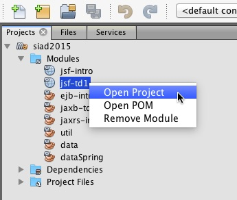
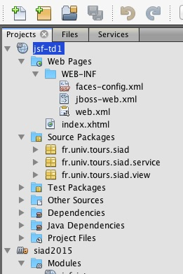
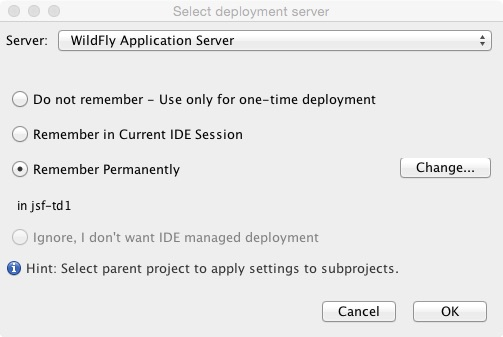

La machine virtuelle vous est fourni avec un système de base de donnée PostgreSQL qui est lancé au démarrage.
Voici le étapes pour ouvrir un projet (prenons par exemple le TD 1 de JSF.
Selectionnez le projet lié au TD


La structure du projet est classique et repondant aux pattern Maven
...
Pour executer le'application nous utilisons le serveur wildfly
Faites un clic droit du le module ouvert et selectionner RUN ou DEBUG selon votre besoin.
Pour la première fois, NETBEANS vous demande de selectionner le serveur. Dans le drop menu, selectionner Wildfly Application Server
Au cas selectionnez l'item pour le rendre permanent (mais cela ne fonctionnera pas pour les VM executée sur les postes de la fac)
